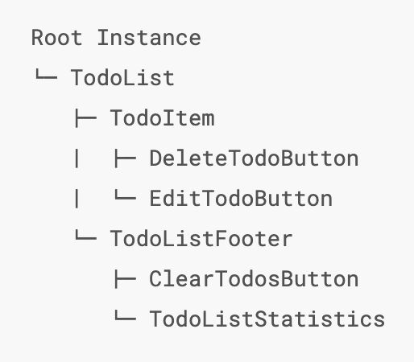

모든 Vue 앱은 Vue 함수로 새 Vue 인스턴스를 만드는 것부터 시작!
MVVM 패턴 (Model–view–viewmodel) View -> ViewModel -> Model View 와 ViewModel 의 관계는 databinding.
위의 디자인 패턴에서 영감을 받았지만, MVVM 패턴과는 관련이 없다.
관례적으로, Vue 인스턴스를 참조하기 위해 종종 변수 vm(ViewModel의 약자)을 사용한다.
Vue 앱은 new Vue 를 통해 만들어진 루트 Vue 인트턴스로 구성되며, 선택적으로 중첩이 가능하고 재사용 가능한 컴포넌트 트리로 구성된다.

Vue 인스턴스가 생성될 때 data 객체에 있는 모든 속성이 Vue의 반응형 시스템에 추가된다.
각 속성 값이 변경될 때, 뷰가 반응하여 새로운 값과 일치하도록 업데이트 된다.
데이터가 변경되면 화면은 다시 렌더링 된다.
인스턴스에 있는 속성은 원본 데이터의 값을 반환한다.
인스턴스에 있는 값을 변경하면, 원본 데이터에 영향을 미침. 그 반대도 마찬가지임.
데이터가 변경되면 화면은 다시 렌더링 된다.
유의할 점은 data 에 있는 속성들은 인스턴스가 생서될 때 존재한 것들만 반응형이라는 것.
Object.freeze () 를 사용하면 기존 속성이 변경되는 것을 막아 시스템이 추적할 수 없다는 것을 의미.
Vue 인스턴스는 데이터 속성 이외에도 유용한 인스턴스 속성 및 메소드를 제공합니다.
다른 사용자 정의 속성과 구분하기 위해 $ 접두어를 붙였습니다.
{{ foo }}